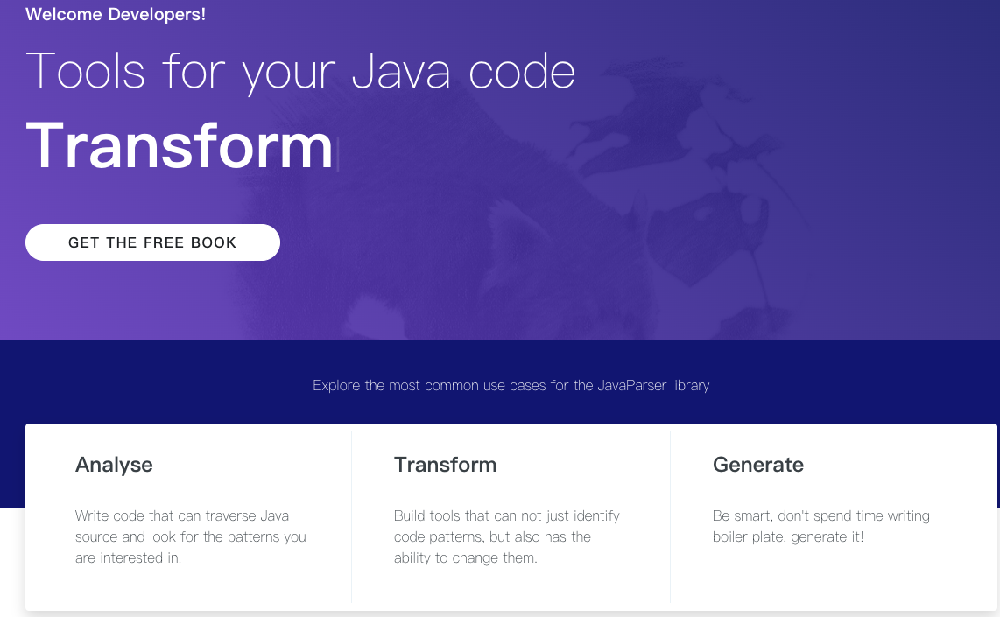
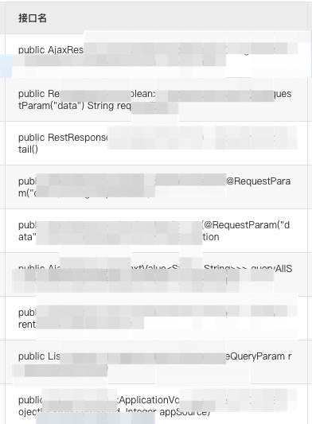
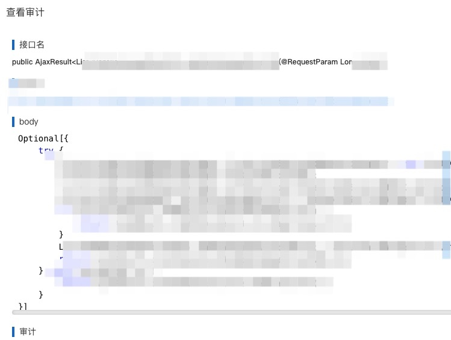
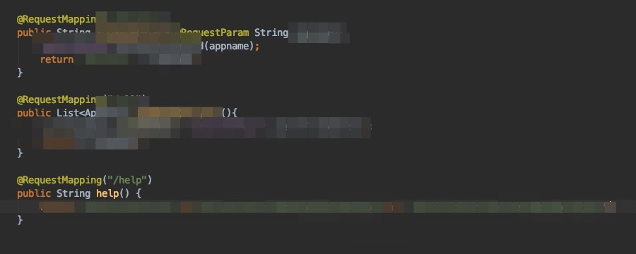
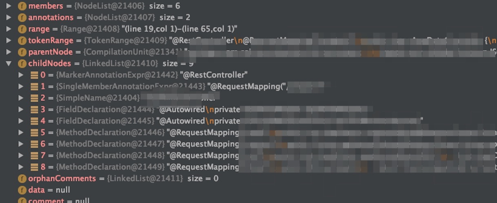

分享一个人工审计代码时的小Tips
在审计一个复杂的Web应用时，可能会有几百个WebAPI，如果没有一个API list，要想不漏掉的审计完还是非常费脑筋的
0x00 原理
通过JavaParse解析Java文件，解析出WebAPI list，简单实现效果如下


关于JavaParse
Analyse, transform and generate your Java code base.
In its simplest form, the JavaParser library allows you to interact with Java source code as a Java object representation in a Java environment. More formally we refer to this object representation as an Abstract Syntax Tree (AST).
0x01 目标
目标：将下图代码中的WebAPI解析出来

0x02 效果
解析完成后的效果大致是这样的，然后在针对要筛选的条件，对api进行筛选即可，例如RequestMapping等
[
{"name":"public List<██████████> ██████████(@RequestParam String ██████████)","body":"Optional[{██████████},
{"name":"public String ██████████(@RequestParam String ██████████)","body":"Optional[{██████████},
{"name":"public List<██████████> ██████████()","body":"Optional[{██████████},
{"name":"public String help()","body":"Optional[{██████████}
]
0x03 代码实现
Gist:https://gist.github.com/B1ueB0ne/7ee600305364f76bf5105c98054f62e6
package net.uxss.b1ueb0ne.javaparse;
import ...
@Component
public class MethodDeclare {
public JSONArray declareParseCode(String code) {
JSONArray declareJsonArray = new JSONArray();
CompilationUnit compilationUnit = JavaParser.parse(code);
//解析Java源代码并创建抽象语法树。
//解析源代码。它从提供程序获取源代码。开头指示可以在源代码中找到的内容（编译单元，块，导入...）
try {
TypeDeclaration declaration = compilationUnit.getType(0);
//返回在此编译单元中声明的类型的列表。
List<BodyDeclaration> list = declaration.getMembers();
//获取这个类里面的成员
for (BodyDeclaration bodyDeclaration : list) {
//枚举成员
Map<String, String> declareMap = new HashMap<>();
if (bodyDeclaration.isMethodDeclaration()) {
//判断是否为方法
MethodDeclaration declareParse = (MethodDeclaration) bodyDeclaration;
declareMap.put("name", declareParse.getDeclarationAsString());
//获取方法名
declareMap.put("body", declareParse.getBody().toString());
//获取方法body
}
JSONObject declareJson = JSONObject.parseObject(JSON.toJSONString(declareMap));
//解析成字符串
declareJsonArray.add(declareJson);
}
compilationUnit.accept(new VoidVisitorAdapter<Void>() {
//不返回任何内容的访问者，其所有访问方法都有一个默认实现，该实现只是以未指定的顺序访问其子方法
@Override
public void visit(MethodDeclaration n, Void arg) {
super.visit(n, arg);
}
}, null);
}catch (Exception e){
System.out.println(e);
}
return declareJsonArray;
}
}
0x04 parse方法详解
com.github.javaparser.JavaParser#parse
CompilationUnit compilationUnit = JavaParser.parse(code);
public static CompilationUnit parse(String code) {
return simplifiedParse(COMPILATION_UNIT, provider(code));
}
com.github.javaparser.JavaParser#simplifiedParse
private static <T extends Node> T simplifiedParse(ParseStart<T> context, Provider provider) {
ParseResult<T> result = new JavaParser(staticConfiguration).parse(context, provider);
if (result.isSuccessful()) {
return result.getResult().get();
}
throw new ParseProblemException(result.getProblems());
}
com.github.javaparser.JavaParser#parse
/**
* Parses source code.
* It takes the source code from a Provider.
* The start indicates what can be found in the source code (compilation unit, block, import...)
*
* @param start refer to the constants in ParseStart to see what can be parsed.
* @param provider refer to Providers to see how you can read source. The provider will be closed after parsing.
* @param <N> the subclass of Node that is the result of parsing in the start.
* @return the parse result, a collection of encountered problems, and some extra data.
*/
public <N extends Node> ParseResult<N> parse(ParseStart<N> start, Provider provider) {
assertNotNull(start);
assertNotNull(provider);
final GeneratedJavaParser parser = getParserForProvider(provider);
try {
N resultNode = start.parse(parser);
ParseResult<N> result = new ParseResult<>(resultNode, parser.problems, parser.getTokens(),
parser.getCommentsCollection());
configuration.getPostProcessors().forEach(postProcessor ->
postProcessor.process(result, configuration));
result.getProblems().sort(PROBLEM_BY_BEGIN_POSITION);
return result;
} catch (Exception e) {
final String message = e.getMessage() == null ? "Unknown error" : e.getMessage();
parser.problems.add(new Problem(message, null, e));
return new ParseResult<>(null, parser.problems, parser.getTokens(), parser.getCommentsCollection());
} finally {
try {
provider.close();
} catch (IOException e) {
// Since we're done parsing and have our result, we don't care about any errors.
}
}
}
com.github.javaparser.JavaParser#CompilationUnit
/*****************************************
* THE JAVA LANGUAGE GRAMMAR STARTS HERE *
*****************************************/
/*
* Program structuring syntax follows.
*/
final public
CompilationUnit CompilationUnit() throws ParseException {PackageDeclaration pakage = null;
NodeList<ImportDeclaration> imports = emptyList();
ImportDeclaration in = null;
NodeList<TypeDeclaration<?>> types = emptyList();
ModifierHolder modifier;
TypeDeclaration<?> tn = null;
ModuleDeclaration module = null;
try {
label_1:
while (true) {
if (jj_2_1(2)) {
;
} else {
break label_1;
}
jj_consume_token(SEMICOLON);
}
if (jj_2_2(2147483647)) {
pakage = PackageDeclaration();
} else {
;
}
label_2:
while (true) {
switch ((jj_ntk==-1)?jj_ntk_f():jj_ntk) {
case ABSTRACT:
case CLASS:
case _DEFAULT:
case ENUM:
case FINAL:
case IMPORT:
case INTERFACE:
case NATIVE:
case PRIVATE:
case PROTECTED:
case PUBLIC:
case STATIC:
case STRICTFP:
case SYNCHRONIZED:
case TRANSIENT:
case VOLATILE:
case OPEN:
case MODULE:
case TRANSITIVE:
case SEMICOLON:
case AT:{
;
break;
}
default:
jj_la1[0] = jj_gen;
break label_2;
}
switch ((jj_ntk==-1)?jj_ntk_f():jj_ntk) {
case IMPORT:{
in = ImportDeclaration();
imports = add(imports, in);
break;
}
case ABSTRACT:
case CLASS:
case _DEFAULT:
case ENUM:
case FINAL:
case INTERFACE:
case NATIVE:
case PRIVATE:
case PROTECTED:
case PUBLIC:
case STATIC:
case STRICTFP:
case SYNCHRONIZED:
case TRANSIENT:
case VOLATILE:
case OPEN:
case MODULE:
case TRANSITIVE:
case SEMICOLON:
case AT:{
modifier = Modifiers();
switch ((jj_ntk==-1)?jj_ntk_f():jj_ntk) {
case CLASS:
case INTERFACE:{
tn = ClassOrInterfaceDeclaration(modifier);
types = add(types, tn);
break;
}
case ENUM:{
tn = EnumDeclaration(modifier);
types = add(types, tn);
break;
}
case AT:{
tn = AnnotationTypeDeclaration(modifier);
types = add(types, tn);
break;
}
case OPEN:
case MODULE:{
module = ModuleDeclaration(modifier);
break;
}
case SEMICOLON:{
jj_consume_token(SEMICOLON);
break;
}
default:
jj_la1[1] = jj_gen;
jj_consume_token(-1);
throw new ParseException();
}
break;
}
default:
jj_la1[2] = jj_gen;
jj_consume_token(-1);
throw new ParseException();
}
}
switch ((jj_ntk==-1)?jj_ntk_f():jj_ntk) {
case 0:{
jj_consume_token(0);
break;
}
case CTRL_Z:{
jj_consume_token(CTRL_Z);
break;
}
default:
jj_la1[3] = jj_gen;
jj_consume_token(-1);
throw new ParseException();
}
return new CompilationUnit(range(token_source.getHomeToken(), token()), pakage, imports, types, module);
} catch (ParseException e) {
recover(EOF, e);
final CompilationUnit compilationUnit = new CompilationUnit(range(token_source.getHomeToken(), token()), null, new NodeList<ImportDeclaration>(), new NodeList<TypeDeclaration<?>>(), null);
compilationUnit.setParsed(UNPARSABLE);
return compilationUnit;
}
}

参考资料：https://www.javadoc.io/doc/com.github.javaparser
本文由 蓝骨
创作，采用 知识共享署名4.0 国际许可协议进行许可
本站文章除注明转载/出处外，均为本站原创或翻译，转载前请务必署名
最后编辑时间为: 2020-09-06T16:49:22+08:00